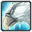

Охотник (Hunter)
Множество различных животных можно встретить, путешествуя по миру Азерота (Azeroth), одни из которых дружелюбные, другие не очень, но у них есть одна общая черта - это их особенная связь с охотниками. Охотники выслеживают, приручают зверей, подавляя их природную агрессию, и заставляют служить мастеру. Верный зверь, лук или ружье - это то, что охотники называют своими единственными друзьями.
Сильные стороны:
Вы можете приручать и контролировать различных животных;
У вашего питомца есть множество способностей, используйте их в своих целях;
Благодаря различным Tracking (способности следопыта) Охотники видят всех противников на карте;
Охотник быстро передвигается (на 30% быстрее) с помощью Aspect of Cheetah (Аспект Гепарда). Увеличьте скорость бега всей вашей группы способностью Aspect of the Pack (Аспект стаи);
Вам не доставит труда остановить или догнать убегающего от вас противника.
Слабые стороны:
Охотники не могут носить наиболее крепкую броню Plate (Латы), что делает их более уязвимыми к физическому урону;
В вашем распоряжении немного способностей ближнего боя. Охотники наиболее эффективны в дальнем бою;
Наличие мертвой зоны - ситуации, когда не возможно атаковать цель. Охотники не могут стрелять по противнику, если тот находится ближе 8-ми ярдов.
Доступные расы:
1) Night Elf (Ночные Эльфы);
Благодаря расовой способности Shadowmeld (уйти в тень), Ночные Эльфы ведут настоящую охоту на своих врагов. Прячась вместе со своей пантерой от врага, вам не составит труда выследить противников на карте и внезапно напасть на них.
2) Dwarf (Дварфы);
Мастерское владение огнестрельным оружием (Gun specialization), позволяет Дварфам наносить больший урон по противнику. «Кто придет к нам с мечом, того легче застрелить!» - любимая поговорка среди Дварфийских охотников.
3) Orc (Орки);
Расовая способность Орков Command (Команда) увеличивает урон, который наносит ваш питомец. Ваш свирепый друг набросится на любого врага. Используйте ваше преимущество, сделайте так, что бы разъяренный зверь стал последним, что увидит ваш противник.
4) Tauren (Таурены);
Большой запас жизненной энергии (Endurance) и возможность оглушить всех врагов вокруг себя (War Stomp) помогает Тауренам выживать даже в самых опасных для вас ситуациях. Представители этой расы – самые физически сильные Охотники во всем Азероте.
5) Troll (Тролли).
Ловкое владение луками (с патча 1.9.0) и больший урон, наносимый животным (Beast Slaying), делает Троллей очень умелыми охотниками. Расовая способность Regeneration (Регенерация) позволит вам даже в бою с врагом быстрее восстанавливать запас своей жизненной энергии.
Основные показатели: Здоровье/Мана, Здоровье/Фокус у животного
Доступная броня: Cloth (Ткань), Leather (Кожаная броня ), Mail (Кольчуги - доступно Охотникам с 40-го уровня)
Недоступное оружие: Mace (Дубинки)
Изначальные умения: Axes (Топоры) или Daggers (Кинжалы), Guns (Ружья) или Bows (Луки)
После специальной тренировки: Crossbows (Арбалеты), Fist Weapons (Кастеты), Polearms (Пики), Staves (Посохи), Swords (Мечи), Thrown (Метательное оружие), Two-Handed Axes (Двуручные топоры), Two-Handed Swords (Двуручные мечи)
О роли класса
Основная задача Охотника – это нанесение большого урона противнику. Такой класс в игре называется Damage Dealer. Находясь в группе, Охотник помогает уничтожать врагов как можно быстрее, ведя по ним огонь с большого расстояния. Возможность нанесения урона из далека, делает этот класс очень полезным, когда нужно выманить монстра. Такое действие в игре называется Pull. И умелое использование стрельбы и различных ловушек делает Охотника прекрасным пуллером.
Не стоит забывать и о лучшем друге Охотника – его питомце. Прирученное животное атакует противников, по вашей команде. И берет на себя все внимание монстра. Это называется контролировать, держать на себе Aggro (агрессия противника, желание атаковать именно эту цель). Отвлекая монстра от самого охотника, питомец дает вам возможность вести стрельбу по противнику, не завязывая с ним ближний бой.
Боевой охотник (прокачка ветки MARKSMANSHIP в талантах)
Дополнительная информация
Охотники выслеживают и приручают любых диких зверей. Используя луки или ружья, Охотники доверяют только своему оружию и прирученному питомцу.
Возможность мастерски выманивать монстров является характерной чертой этого класса. Охотники используют ловушки, что бы остановить выманенного противника. Благодаря комбинации собственных способностей и возможностей прирученного животного, Охотник по праву считается одним из лучших пуллеров в игре. Пуллер – игрок в группе, задачей которого является выманивание врагов.
Лучший друг Охотника – его питомец. Не забывайте, что у прирученного вами зверя есть показатель самочувствия. Чем выше этот показатель, тем счастливее ваш питомец, тем более большой урон он будет наносить. Кормите прирученного зверя едой, которая ему нравится, и тогда вы без особого труда сможете поддерживать его самочувствие. В противном случае питомец уйдет от вас или даже нападет! Только Охотники могут давать уникальные имена своим животным (Rename). Но давать кличку каждому зверю можно только один раз.
Дальний бой
Охотники могут вести рукопашный бой, но на расстоянии они действую намного эффективнее.
Класс Пуллер
Владение ловушками и способностями ослабить и замедлить противника делает Охотников прекрасным пуллером для игры в группе.
Показатели
Важнейшей характеристикой для любого Охотника является Agility (Ловкость). Увеличивает мощь вашей атаки на расстоянии на 1 и на X в ближнем бою. Значение ловкости в 51 увеличивает шанс нанесения критического урона по противнику на 1%. Stamina (Выносливость) повышает запас ваших жизненных сил. Intelligence (Интеллект) увеличивает количество маны Охотника.
Прицелы
Инженеры могут собирать снайперские прицелы для оружия Охотника. Найдите инженера, что бы повысить урон, наносимый вашим оружием, или посетите Аукцион, где вы сможете купить прицел.
Боезапас
Всегда старайтесь использовать самые лучшие патроны и стрелы, которые могут наносить больший урон по противнику. Инженеры могут создавать намного более качественные боеприпасы, чем те, которые продаются в торговых лавках.
Колчаны и сумки для патронов
Используя их для хранения своих стрел и патронов, Охотники увеличивают скорость перезарядки своего оружия. Это позволяет им стрелять быстрее. Старайтесь найти колчан или сумку с максимально большим бонусом к скорострельности. Многие из них вы можете получить в награду за выполненный квест.
Кличка питомца
Придумайте имя своему животному! Только Охотники могут давать клички питомцам. Кликните правой кнопкой мыши на изображение прирученного животного и выберите Rename (Переименовать). Давать кличку можно только один раз.
Уход за животным
Животное Охотника обладает показателем настроения - иконка рядом с изображением питомца. Чем чаще ваш зверь вступает в бой, тем сильнее ухудшается его самочувствие. Но Охотник может повысить настроение питомцу покормив его. Счастливое животное наносит больший урон врагам (125%). Если вы не будете следить за настроением прирученного зверя, то питомец уйдет или даже нападет на вас!
Еда для питомца
Всегда носите с собой запас пищи для животного. Разные звери предпочитают разную еду. Узнать гастрономические предпочтения вашего зверя можно в меню. Нажмите "С" и выберите закладку Pet (Питомец). Животное будет есть как сырую, так и приготовленную пищу.
Размер животного
Прирученное животное уменьшается в размерах и выглядит меньше своих диких собратьев. Это делает игру в группе более удобной. Некоторым игрокам может не понравится, что ваш огромный питомец загораживает собой весь обзор.
Stables (Загоны)
Охотники держат своих питомцев в загонах, которые находятся в городах рядом с тавернами и почтовыми ящиками. Вы можете приобрести дополнительные места, чтобы содержать несколько животных. Если вы хотите поменять питомца и оставить старого, то пользуйтесь загонами.
Рекомендации:
Бой Охотника
1) . Держите дистанцию!
Охотник очень эффективен в стрелковом бою. Перемещайтесь, сохраняя расстояние между вами и противником. Если вам пришлось вступить в ближний бой, то используйте способности Охотника, что бы вернуться на подходящую дистанцию для стрельбы.
2). Используйте вашего питомца
Начните бой, послав в атаку питомца. Животное сконцентрирует весь гнев и внимание противника на себе, вынуждая его не нападать на Охотника. Growl (Рычание) - очень полезная способность вашего питомца. Используйте ее, если враг начнет атаковать вас. И высока вероятность того, что противник отвлечется на вашего зверя.
3). Wing Clip и бег
Нанесите удар Wing Clip (Замедляет движение) по противнику и быстро отбегите от него, используя Aspect of Cheetah (Аспект Гепарда). Затем снова атакуйте врага с дистанции. Охотник так же может воспользоваться способностью Concussive Shot (Оглушающий выстрел).
4). Поведение в группе
В группе игроков Охотник наносит урон противникам, стоя за спинами своих друзей. Так же играет роль пуллера - выманивает противников, используя свои способности и ловушки. Если среди партнеров по группе есть еще Охотники, то важно использовать разные Sting (Жало). Эти выстрелы ослабляют противников, понижая их характеристики или отравляя.
Стрельба на бегу
Вы можете использовать Hunter's Mark (Метка охотника) находясь в движении. Так же стрелять по противникам Arcane Shot (Таинственный выстрел) и различными Stings (Жала) на бегу. Помните это и используйте в битвах.
Подсказки по питомцам:
Недовольное животное, ставшее агрессивным , можно отправить в Stables (Загон). Где питомец через некоторое время станет лояльным;
В мире World of Warcraft множество животных с уникальными способностями и характеристиками. Найдите и приручите их!
PVP
Если вас атаковал противник, когда вы не были к этому готовы, то используйте Scattershot (Неожиданный выстрел), затем включите Aspect of Cheetah (Аспект Гепарда) и отбегите на расстояние стрельбы. Не забывайте, что если ваш питомец атакует в это время врага, то эффект неожиданного выстрела не будет действовать. Оказавшись на удобной дистанции, снова пошлите прирученное животное в бой и откройте огонь по противнику. Эти действия дадут вам преимущество в начале боя. Вы можете так же использовать эту тактику против монстров.
Epic Hunter Quest
В игре есть серия эпических квестов для Охотников. Пройдите испытания и получите хорошие награды.
Профессии.
Для Охотника наиболее подходящими являются:
Herbalism и Alchemy - создавайте зелья, повышающие характеристики или восстанавливающие жизнь/ману Охотника;
Mining и Engineering - Охотник сможет делать улучшенные патроны или менять их на стрелы для своего лука.
Охотник - Галерея.
Richie production, Ltd. 2008